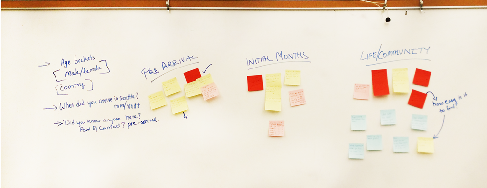

Every year Hundreds of International students from all over the world move to the University of Washington to pursue their higher education. There are several problems these students face during the transition period owing to the sudden cultural and social changes. Having faced these problems ourselves, we aimed to help solve a few of those problems students face to make their transition and stay more comfortable.
Introduction

The Problem

There are many real-estate and home-search websites, and yet it's difficult for students to find suitable accommodation.
We started out to solve the problem of finding authentic home-food and food of individual’s preference more easily in Seattle, because it was a problem I personally faced in the initial few days. Being a vegetarian, it was relatively harder for
me to find food of my choice. However, as we started doing the research, we realized that although food is a concern for students, there was a bigger problem which affected almost every one of them: Finding off-campus accommodation.
With so many listing and real-estate websites advertising homes, it is difficult for students to make choice and verify the places they were seeing online. We hence designed UW-ISE, an app to help international students find reliable off-campus
accommodation, which are verified and reviewed by students.
Target Users
International students who are looking for off-campus accommodation were our target users.
Primary Target Users: International students looking for off-campus accommodation
Secondary Target Users: Senior students living in Seattle who can mentor new students
Research
 
From the data collected, we created a word clod to find out where exactly the problem lies.
Although the idea of helping students find good food, of their preference sounded like a good idea when we started, we wanted validation from the target users. We conducted Surveys, Focus group studies and interviews to understand their problems
and validate our idea. With the data we collected from the focus group of first year graduate students, interviewing 4 students from as many different countries and over 30 survey responses, we were able to see patterns and gauge the commonness
in the problems faced by the international students.
Findings: We realized that, although managing food was one of the problems, it wasn't the biggest problem. The most common problem faced by the students was finding accommodation. And this was a problem that affected students more who chose
off-campus accommodation. The existing process to find off-campus accommodation, viz. via craigslist and padmapper weren't the most reliable way. Having no contact here to verify the places they searched online added to the problem.
Personas

Mapping out characteristics & problems faced by the users.

We created 3 personas that reflected the goals, motivation & behaviours of out target users.
From the data gathered we created three personas - Two primary personas, Satish and Amira, who represented the group of new international students, moving to Seattle for the first time; A secondary persona, Hari, who represented the group of
senior students who mentored new students like Satish and Amira by answering their queries and providing tips about the university and the life in Seattle.
The personas helped us focus on the problem and kept the design process on the track. While ideating and sketching the app, we knew who we were designing for and we always had the personas in mind whenever the discussion of a new feature came
up. Creating personas helped us stay clear of ‘feature-creeping’.
Ideation
We began ideating on various possible solutions to solve the problem of helping international students find off-campus accommodation.
Sketching helped us quickly ideate and iterate.
Knowing what the problem is, who the target users are and what the solution is, we started ideating and sketching. Initially we started with 5 unique design solutions:
- Finding Temporary accommodation
- Finding mentors
- Finding roommates
- Finding Permanent accommodation
- Travel help
- Finding Permanent Off-Campus accommodation
- Finding Roommates
- Finding & Contacting Mentors

Sketching helped us quickly ideate and iterate.